Product tour
Everything on this page is a real capture from the running application, using public Sprout Social (NASDAQ: SPT) data.
See a run, end to end
The first half is a screen recording of a live run: the prompt typed in real time, the plan, the approval click and the agents starting work (waiting sped up 10x). That recording was made while the model endpoint was timing out, so it stops before the end of the run. The result screens at the end are screenshots of an earlier completed run on the same company, not the end of the same recording.
1 · Chat: from a brief to an approved plan
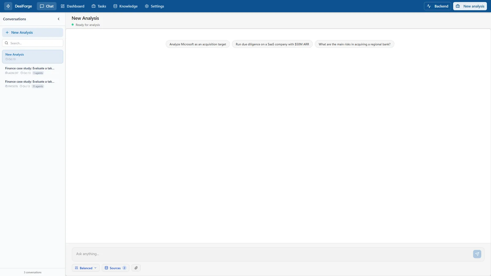
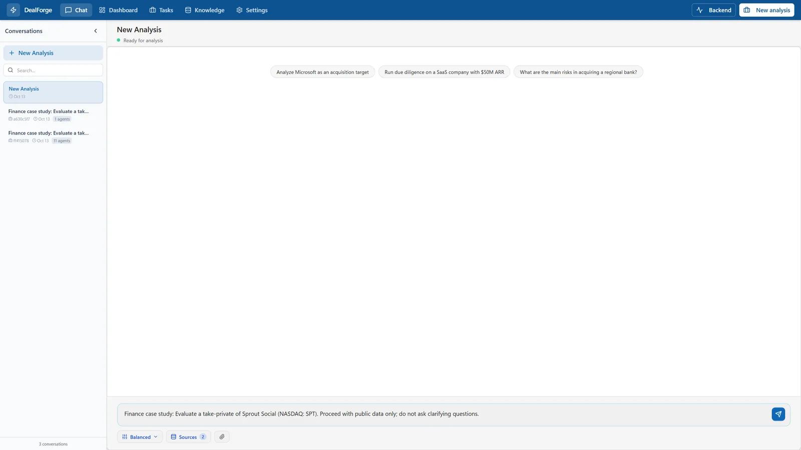
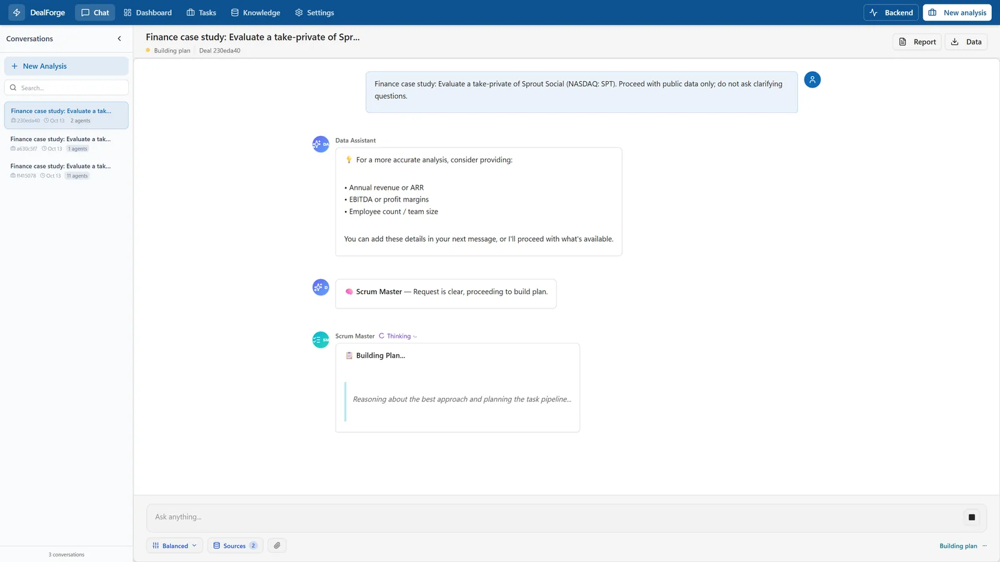
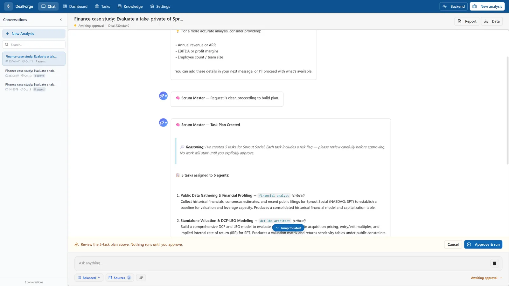
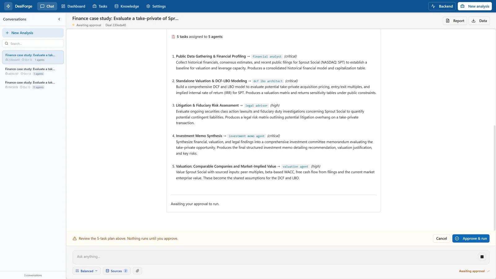
Why this matters: agents call paid APIs and run for minutes. The plan is shown first so you control scope and cost, and you can also edit the plan on the Task Board before approving.
2 · Agents at work
After approval, tasks run in dependency order. Data tasks first, then valuation, then the DCF/LBO and risk agents that depend on it, then the memo. Independent tasks run in parallel. Each agent posts a card to the thread when it finishes, with its provider, duration, a note that confidence is not calibrated, and validation status.
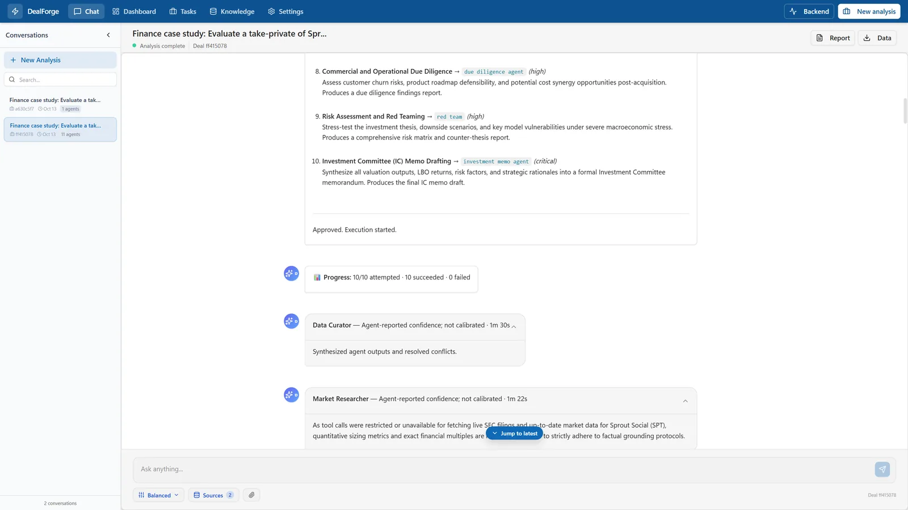
3 · The brief
When every task has returned, the chat builds an executive brief from recorded outputs only: an evidence snapshot with formatted values and periods, derived findings, key risks, and, when agents disagree, an Agents Disagree section with the exact warnings.
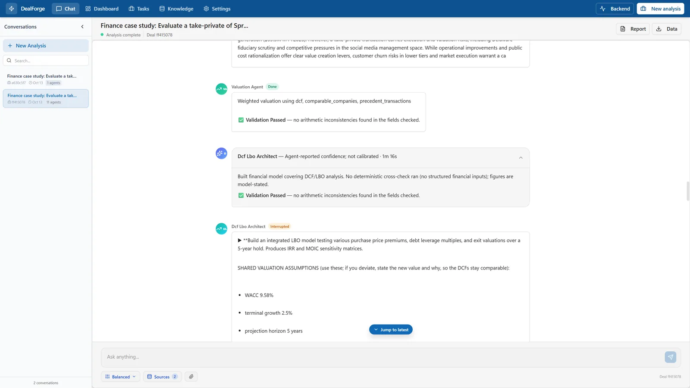
Below the brief you will see Report and Data buttons (Word report and structured JSON). Until a reviewer approves, the Word report downloads as …_DRAFT_not_approved.docx and the chat tells you so.
4 · Dashboard
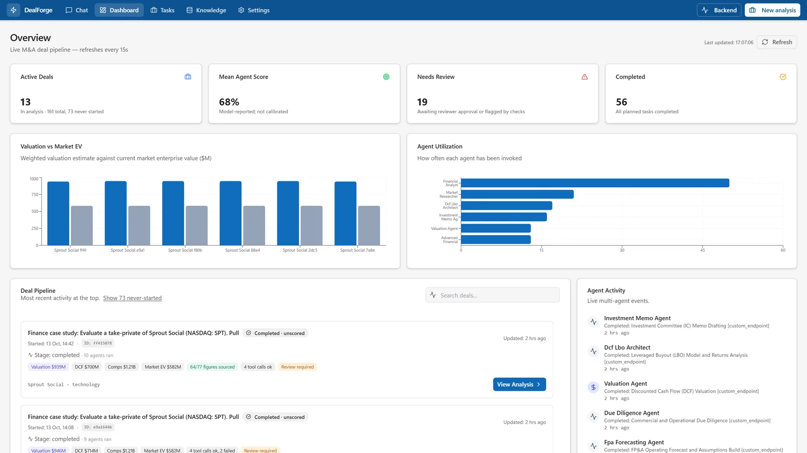

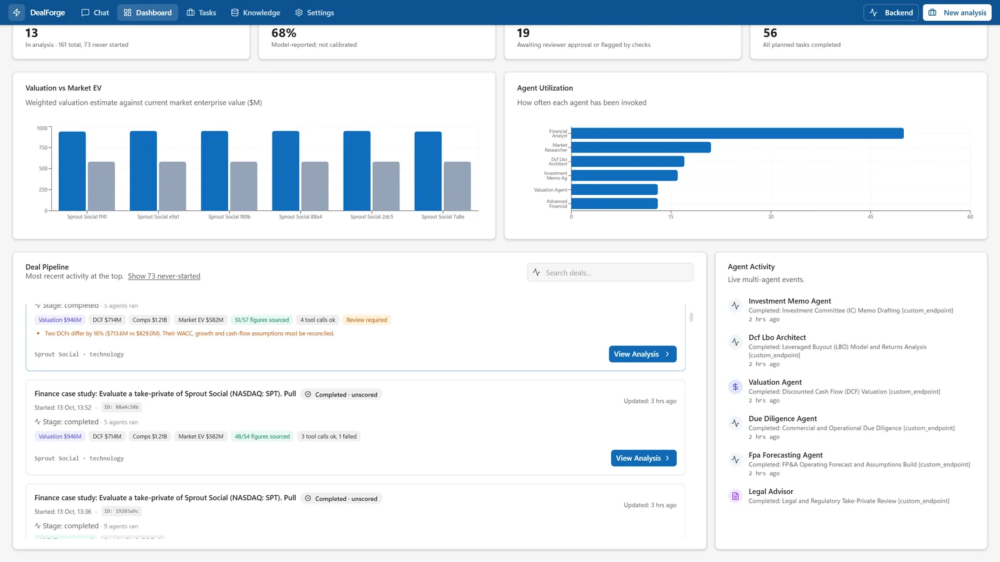
View Analysis opens the deal: you can preview the document plan, add a free-text request ("focus on LBO returns for the IC"), toggle fill gaps (research missing items), generate the four documents, approve them for release and download drafts or the bundle.
5 · Task Board
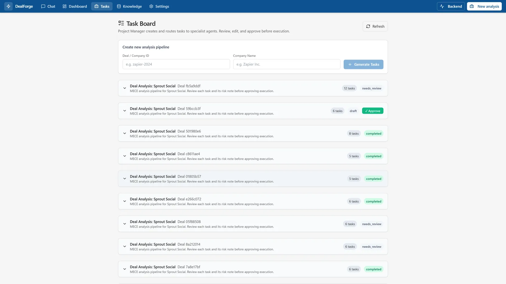
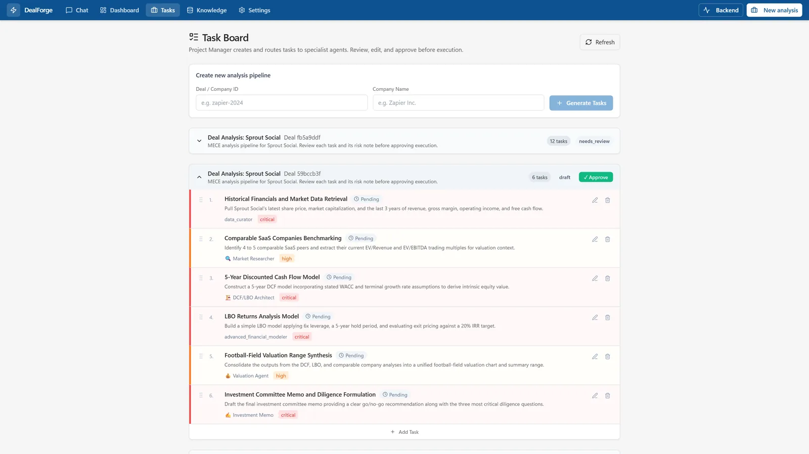
Plans can be edited (title, description, agent, priority), extended with your own tasks, reordered, approved and executed from here or from the chat. These actions map to the /api/v1/tasks/… endpoints.
6 · Reports
From a finished analysis the app generates Word, PowerPoint, Excel and PDF. See Reports & review gate for the full pipeline and gallery.
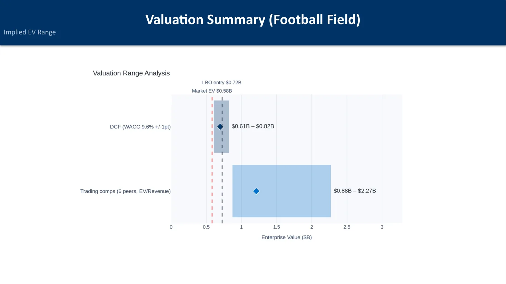